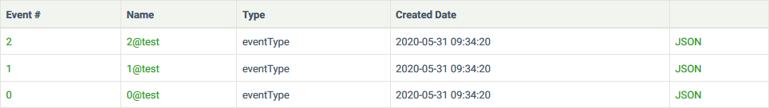

| Project Year -- 2020
| Project Year -- 2020
 | Tags --
c# |
ddd |
event-sourcing |
console |
microservices |
event store |
| Tags --
c# |
ddd |
event-sourcing |
console |
microservices |
event store |
 | Repository -- https://github.com/ThomB93/EventSourcingSpike
| Repository -- https://github.com/ThomB93/EventSourcingSpike
Event Sourcing is an alternative approach to data persistence that leverages the use of events to capture past actions in the system as a way to store information, while also providing logging features. The source of these events is the system in which Event Sourcing is being applied. Instead of storing tables of data, as in traditional relational databases, data is stored using 'event streams', with each stream corresponding to a business entity (or an Aggregate in Domain-Driven Design). Each individual event contains information about the changes made to an entity at a given time. By following the timeline of events from beginning to end it is possible to derive the current state of an entity. One important aspect of this way of persisting data, is that past data may not be deleted or changed (all events are immutable) - the events themselves provide a look into the past and we all know you can't 'change' or 'delete' the past.
The way in which you write events is important. They should be represented as verbs in the past tense, such as 'UserRegistered' or 'UserUpdated'. By also following the DDD principles, this then becomes part of the ubiquitous language. If you had instead implemented this as a 'User' table inside an RDBMS, you would lose the history of previous changes that had occurred to a single user. This makes all actions that happen in a system explicit and easier to interpret and act upon.
You might say that we are persisting two things with Event Sourcing: The application state and an event log. It's now possible to query the application state at any point in time by using temporal queries and we also get a log of changes to the state, which can later be used in error handling scenarios or as business intelligence. By using 'Event Replay' we can easily see what went wrong in the chain of events for one particular entity. If a system communicates via Async messaging, it might happen that some events are received in the wrong order - therefore it is highly important that the system supports the possibility of replaying events.
...
This .NET application explores the basic features of Event Sourcing (Event Streams, Subscriptions, Projections, etc.) and provides an implementation of a simple User aggregate in the way of Domain-Driven Design. Users can input commands into a console to communicate the Event Store. While any database system can be used to hold events and act as an Event Store, for this project I have implemented the use of a dedicated system simply called EventStore.
To interact with the EventStore, I've made use of the .NET API Client, which handles all communication over TCP. To give an example of the API in action, let's see how you can create a simple stream and add some events to it.
public static void CreateAndRunTestStream(string streamName)
{
for (var x = 0; x < 3; x++)
{
EventStoreLoader.Connection.AppendToStreamAsync(streamName,
ExpectedVersion.Any,
GetEventData(x)).Wait();
Console.WriteLine("Event " + x + " has been written to " + streamName);
}
}
This method accepts a stream name and appends 3 events to it. If a stream with the name does not yet exist in the EventStore, a new stream will be created. A seperate method handles the creation of the event in the format that the EventStore expects.
private static EventData GetEventData(int i)
{
return new EventData(
Guid.NewGuid(),
"eventType",
true,
Encoding.ASCII.GetBytes("{\"test-data\" : " + i + "}"),
Encoding.ASCII.GetBytes("{\"meta-data\" : " + i + "}")
);
}
All events require an ID, a type, some data, and metadata. A GUID (Globally Unique Identifier) is provided as the ID and the data is being supplied in the JSON format, which acts as the standard data format for this particular EventStore. Data may be saved in any given format, but in this case, we would lose some capabilities of the EventStore. When looking at the events from the perspective of the EventStore admin UI, we can see that they have been saved correctly and appear in the 'test' stream. You can click on each individual event to get a look at its data and metadata. You can notice that they also appear in the order in which they were written. Storing the correct sequence of events is highly important when later the data needs to be queried.  In addition to event streams, one other important aspect of Event Sourcing is 'Subscriptions'. EventStore supports several different subscription types (Persistent, Catch-Up, and Volatile). Here we will mostly focus on the first two. The method below creates a persistent subscription with a standard configuration - it starts listening for events from the point it is created. All prior events in the stream are not being picked up. Catch-Up subscriptions work the other way around. They attempt to 'catch-up' with the stream in which they are subscribed, meaning all prior events are being picked up. We will look more closely at catch-up subscriptions when dealing with projections later on.
private static void CreatePersistentSubscription(string streamName)
{
PersistentSubscriptionSettings settings = PersistentSubscriptionSettings.Create()
.DoNotResolveLinkTos()
.StartFromCurrent();
try
{
EventStoreLoader.Connection.CreatePersistentSubscriptionAsync(streamName, GROUP, settings, new UserCredentials("admin", "changeit")).Wait();
}
catch (AggregateException ex)
{
if (ex.InnerException.GetType() != typeof(InvalidOperationException)
&& ex.InnerException?.Message != $"Subscription group {GROUP} on stream {STREAM} already exists")
{
throw;
}
}
}
After creating the subscription we want to connect to it. The method below accepts a stream name and attempts to connect to a persistent subscriptions listening on this stream. When the connection has been made, and new events are added to the stream, the subscription will print the event details to the console. The subscription will remain active until the EventStore connection is closed.
private static void ConnectPersistentSubscription(string streamName)
{
EventStoreLoader.Connection.ConnectToPersistentSubscription(streamName, GROUP, (_, x) =>
{
var data = Encoding.ASCII.GetString(x.Event.Data);
Console.WriteLine("Received new event: EventStreamId = " + x.Event.EventStreamId + " : EventNumber = " + x.Event.EventNumber + " : Created at = " + x.Event.Created +"\n");
Console.WriteLine(data);
});
Console.WriteLine("Waiting for new events...");
}
Now that we have created all these events, we might want to query them to extract their information. The ListOperations method will display all events of a given stream in either direction (forwards/backwards). Since a stream may contain hundreds or even thousands of events, we make use of 'stream even slices' to record the position in the stream when querying. We loop through each slice, each contaning a subset of the entire stream (20 events in this case) and add the events contained to the list of ResolvedEvent objects. When we have reached the end of the stream, we print the events to the console with some information about their creation date and type.
private static void ListOperations(string streamName, bool reversed = false)
{
var streamEvents = new List<ResolvedEvent>();
StreamEventsSlice currentSlice;
long nextSliceStart = reversed ? StreamPosition.End : StreamPosition.Start;
do
{
currentSlice =
reversed ?
EventStoreLoader.Connection.ReadStreamEventsBackwardAsync(
streamName,
nextSliceStart,
20,
false).Result /
:
EventStoreLoader.Connection.ReadStreamEventsForwardAsync(
streamName,
nextSliceStart,
20,
false).Result;
nextSliceStart = currentSlice.NextEventNumber;
streamEvents.AddRange(currentSlice.Events);
} while (!currentSlice.IsEndOfStream);
foreach (var view in streamEvents)
{
Console.WriteLine("Event No: " + view.Event.EventNumber + " Created at: " + view.Event.Created + " Type: " + view.Event.EventType);
}
}


{kind=link}
{kind=link}